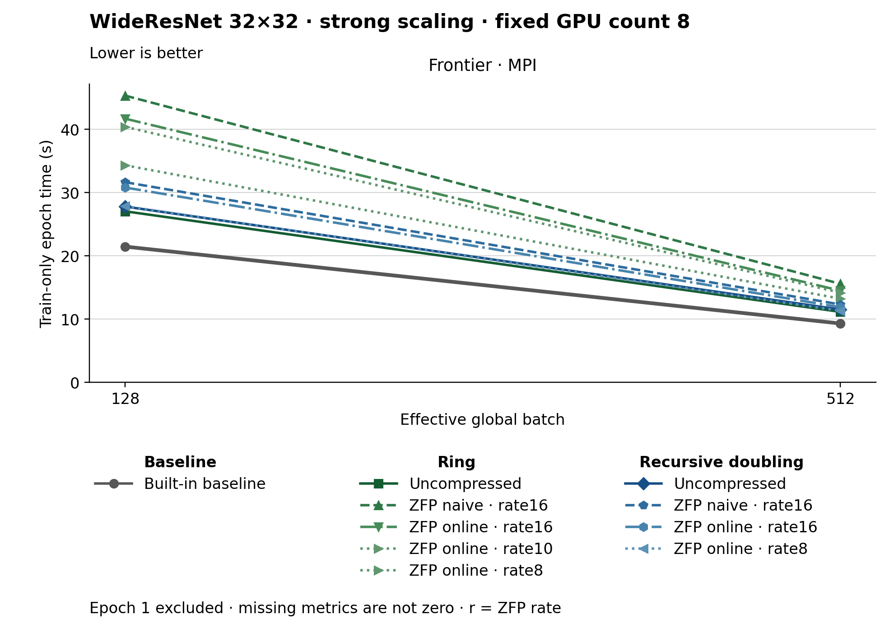

The figure uses lines. Methods use colors, line styles and markers. The metric is Train-only epoch time (s). Frontier · MPI, Effective global batch 128: Built-in baseline has the lowest plotted value, 21.470. Frontier · MPI, Effective global batch 512: Built-in baseline has the lowest plotted value, 9.320. Epoch 1 is excluded. Values are medians; when repeated runs are available the selected repeat policy is median. These are not confidence intervals across repeated jobs. Missing or unrecorded metrics are omitted, not set to zero.
| Panel | Effective global batch | Method | Value | Runs |
|---|---|---|---|---|
| Frontier · MPI | 128 | none | 21.47 | 1 |
| Frontier · MPI | 128 | ring | 27.05 | 1 |
| Frontier · MPI | 128 | ring_zfp_naive:16 | 45.33 | 1 |
| Frontier · MPI | 128 | ring_zfp_online_coll:16 | 41.69 | 1 |
| Frontier · MPI | 128 | ring_zfp_online_coll:10 | 40.4 | 1 |
| Frontier · MPI | 128 | recursive_doubling | 27.8 | 1 |
| Frontier · MPI | 128 | recursive_doubling_zfp_naive:16 | 31.65 | 1 |
| Frontier · MPI | 128 | recursive_doubling_zfp_online_coll:16 | 30.81 | 1 |
| Frontier · MPI | 128 | recursive_doubling_zfp_online_coll:8 | 27.86 | 1 |
| Frontier · MPI | 128 | ring_zfp_online_coll:8 | 34.32 | 1 |
| Frontier · MPI | 512 | none | 9.32 | 1 |
| Frontier · MPI | 512 | ring | 11.16 | 1 |
| Frontier · MPI | 512 | ring_zfp_naive:16 | 15.59 | 1 |
| Frontier · MPI | 512 | ring_zfp_online_coll:16 | 14.5 | 1 |
| Frontier · MPI | 512 | ring_zfp_online_coll:10 | 14.19 | 1 |
| Frontier · MPI | 512 | recursive_doubling | 11.52 | 1 |
| Frontier · MPI | 512 | recursive_doubling_zfp_naive:16 | 12.33 | 1 |
| Frontier · MPI | 512 | recursive_doubling_zfp_online_coll:16 | 11.89 | 1 |
| Frontier · MPI | 512 | recursive_doubling_zfp_online_coll:8 | 11.32 | 1 |
| Frontier · MPI | 512 | ring_zfp_online_coll:8 | 13.24 | 1 |